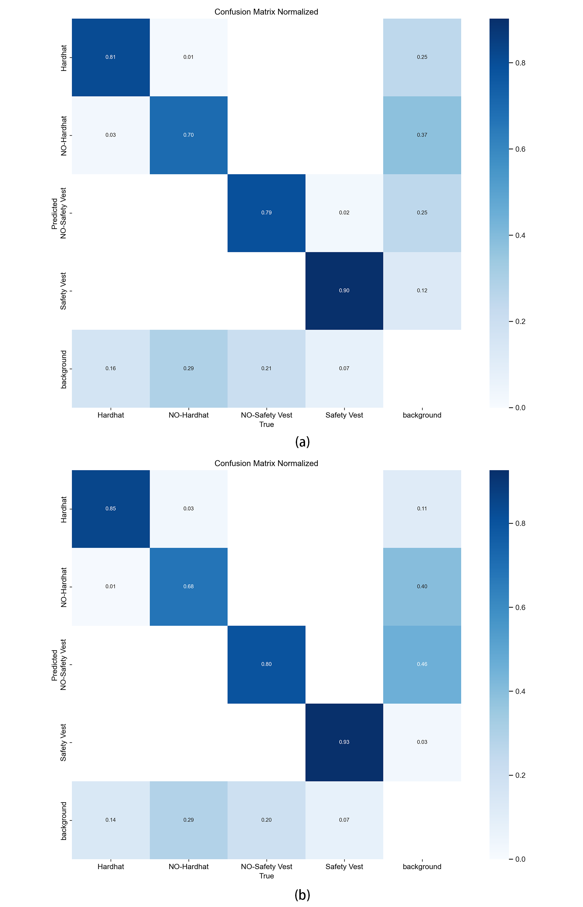
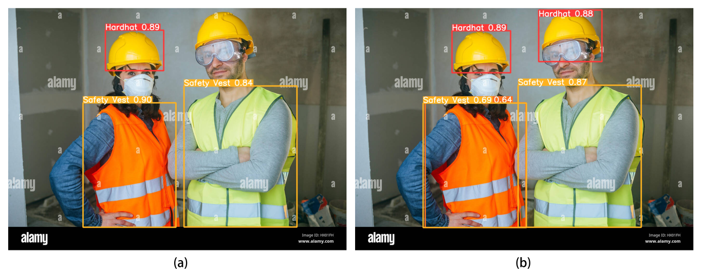

Comparative Experiment
As shown in the Table, this experiment trained and compared four different models. The original YOLOv8 model serves as the baseline, with the "-" symbol indicating the inclusion of the fusion module for improvement. The results indicate that the original YOLOv8 model achieved precision, recall, mAP50, and mAP50-95 performances of 89.1%, 89%, 84.78%, and 54.79%, respectively.
| Model | P (%) | R (%) | mAP@0.5 (%) | mAP@0.5:0.95 (%) |
|---|---|---|---|---|
| YOLOv8 | 0.891 | 0.89 | 0.8478 | 0.5479 |
| SimAM-YOLOv8 | 0.909 | 0.89 | 0.8398 | 0.5266 |
| SEAttention-YOLOv8 | 0.860 | 0.86 | 0.8112 | 0.5085 |
| BiFPN-YOLOv8 | 0.962 | 0.89 | 0.8550 | 0.5565 |
While not every improvement resulted in significant enhancements in these metrics, specifically, only the BiFPN-YOLOv8 model exhibited significant improvements in all aspects. Compared to the baseline model, precision, mAP50, and mAP50-95 improved by 7.97%, 0.85%, and 1.57%, respectively, while recall remained unchanged, further validating the feasibility of the improved model. The results of the comparative experiment indicate that using the combination of improved modules can enhance precision, recall, and mAP values, thereby further optimizing the model's performance.
Evaluation
Deep learning models are often perceived as black-box models, despite their excellent performance across various tasks, understanding their decision-making and reasoning processes poses significant challenges. Understanding the interpretability of deep learning models is crucial for this thesis. Thoroughly exploring the interpretability of deep learning models is essential for intuitively understanding their performance. In this experiment, the YOLOv8 model and the BiFPN-YOLOv8 model were chosen as validation models. Their performance was thoroughly examined by analyzing the confusion matrices of both models. Figure 4-6 illustrates the confusion matrices of the two models.

Confusion matrix of the YOLOv8 and BiFPN-YOLOv8.
(a) Confusion matrix of YOLOv8.
(b) Confusion matrix of BiFPN-YOLOv8.
Analysis of Experimental Results
The confusion matrix indicates that the BiFPN-YOLOv8 model outperforms the original YOLOv8 model in all four categories. Detailed analysis reveals that the original YOLOv8 model achieves an accuracy of only 81% for safety helmets and 90% for reflective vests. In contrast, the proposed BiFPN-YOLOv8 model significantly enhances the recognition accuracy of safety helmets and reflective vests, with increases of 4% and 3%, respectively.
Below figure provides a more intuitive comparison of the model's detection results. The first image (a) illustrates the detection results of the original YOLOv8 model, while the second image (b) depicts the results of the BiFPN-YOLOv8 model. As shown in figure, in complex backgrounds, the BiFPN-YOLOv8 model accurately identifies all objects, whereas YOLOv8 experiences one missed detection, failing to detect the male figure on the right wearing a partially obscured safety helmet. The original model exhibits significant issues with missed detections in complex backgrounds, possibly due to watermarks or goggles' influence. However, BiFPN-YOLOv8 demonstrates precise target identification in such scenarios, accompanied by enhanced confidence scores.

Comparison of the detection performance between YOLOv8 (a) and BiFPN-YOLOv8 (b).
In summary, compared to YOLOv8, the proposed model shows significantly improved detection performance through strategic enhancements. It is noteworthy that it not only excels in numerical metrics but also demonstrates higher efficacy in detecting targets in real-world complex backgrounds. These improvements represent a significant leap in model functionality, ensuring outstanding performance across different environments and addressing the challenges posed by targets in complex settings.